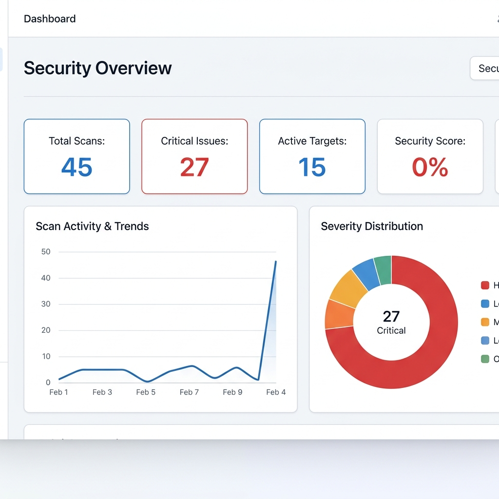
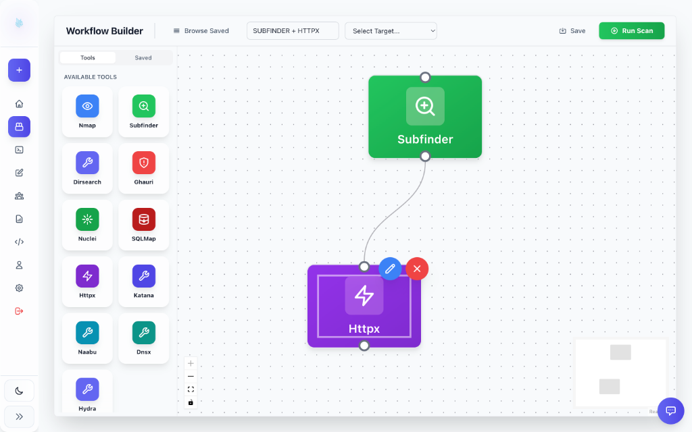
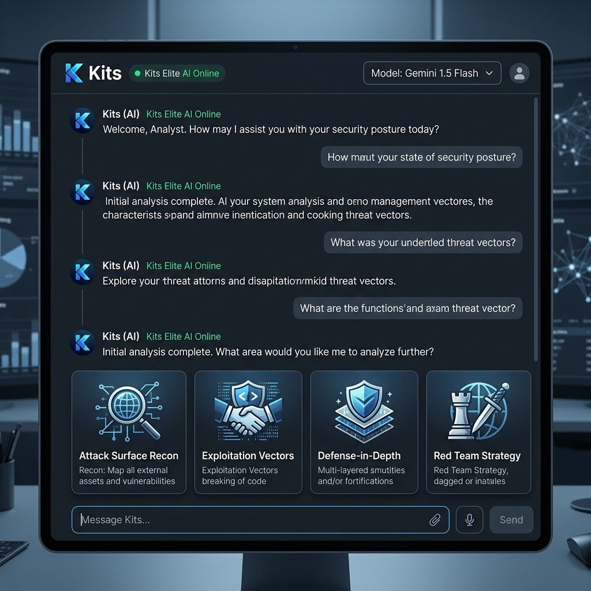
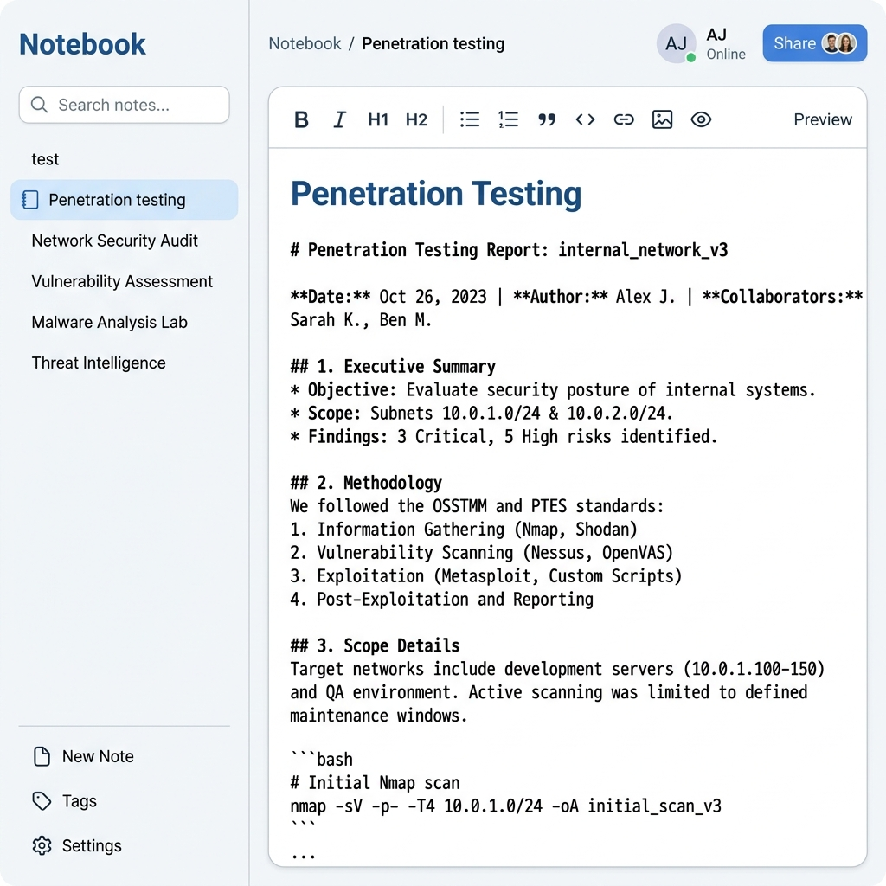
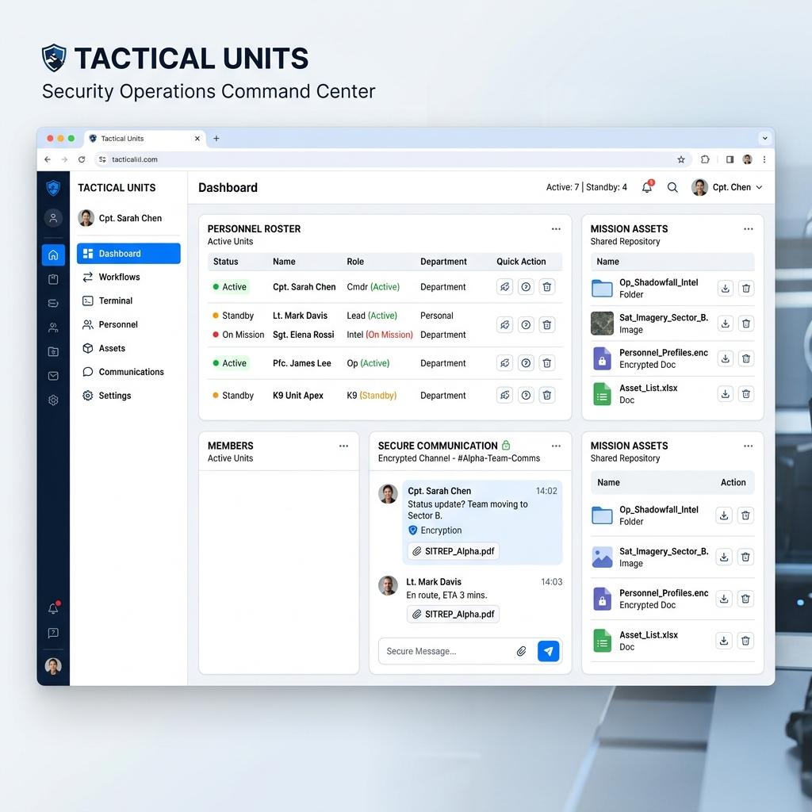

Modular Intelligence
CyberLynX is an orchestration engine designed to centralize the fragmented security landscape. Unifying discovery, scanning, and analysis into a single elite ecosystem.
Network Discovery
Autonomous mapping of infrastructure and service discovery across global networks.
Vulnerability Scanning
High-fidelity analysis for known vulnerabilities, misconfigurations, and CVE exposures.
Asset Intelligence
Deep reconnaissance and subdomain enumeration to visualize the entire attack surface.
Web Security
Advanced fuzzing and crawling of web applications to identify hidden endpoints.
Deep Analysis
Multi-dimensional correlation of scan data to prioritize remediation efforts.
Targeted Exploitation
Controlled validation of critical vulnerabilities through automated exploitation modules.
Multi-Arch Engine
Native support for linux/amd64 and linux/arm64 infrastructure.
Enterprise CI/CD
Continuous security pipelines with native Jenkins & GitLab integration.
Docker Native
Lightweight, multi-stage builds optimized for rapid deployment.
Go-Core Logic
High-concurrency backend engineered for low-latency analysis.
Interface Gallery
A command center built for elite performance. Explore the modules that drive CyberLynX security intelligence.

Security Overview
Get a 360-degree view of your security posture. Monitor live scan activity, track vulnerability trends, and manage active targets through a high-fidelity dashboard designed for mission-critical awareness.

Visual Workflow Canvas
The CyberLynX Orchestration Layer allows you to drag and drop security modules into complex attack chains. Automate reconnaissance, scanning, and exploitation with a visual nodes-and-links interface.
- Dynamic Node Connection
- Parallel Tool Execution

Kits: Bring Your Own AI
Integrate your own AI models using API keys from Claude, Gemini, and DeepSeek. Kits acts as your elite security co-pilot, providing real-time analysis of your attack surface.

Integrated XTerm Engine
Direct system access through a persistent, high-performance terminal. Execute custom scripts, manage containerized environments, and debug your tools.

Collaborative Notebook
Document findings and collaborate on reports with an integrated markdown-supported notebook. Capture evidence, link vulnerability data, and generate professional reports.

Tactical Units & Roster
Scale your operations with multi-user workspaces. Manage active personnel, coordinate through secure channels, and share encrypted assets.
Encrypted Communications
Secure team chat for operational coordination.
Personnel Management
Track specialized skills of all units.